2．数学物理和变分法
拉格朗日用其最小作用原理对动力学规律的成功描述，启示着这概念应该可以应用到物理学的其他分支上去。拉格朗日对流体动力学给出了极小原理（适用于可压缩的和不可压缩的流体）(1)，他由此导出了关于流体动力学的欧拉方程（第22章第8节），而且他确实自夸说，极小原理主宰了这个领域，就像它主宰着质点运动和刚体运动那样。在19世纪早期，许多弹性问题也为泊松、热尔曼、柯西和其他一些人用变分法解决。弹性问题的工作还使这课题保持经常的活跃，但在这个领域内或在高斯的著名力学贡献———“最小约束原理”（The Principle of Least Constraint）(2)中，并没有主要的变分学的新数学概念引人注目。
第一个值得注意的新论点归于泊松。利用拉格朗日的广义坐标，泊松直接追随拉格朗日的两篇论文，并且从拉格朗日方程（第24章第5节）
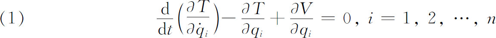
出发(3)。这里用广义坐标表示的动能T是
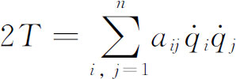
，V是势能，而T，V与t无关。他令L＝T-V。当V仅依赖于qi而不依赖于qi时，就有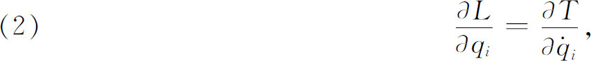
从而他可以把运动方程改写成
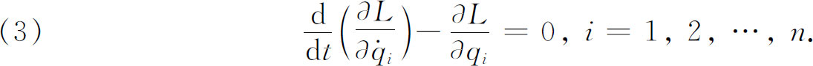
他还引进
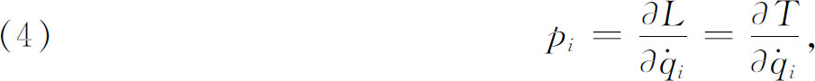
因此从（3）他得到
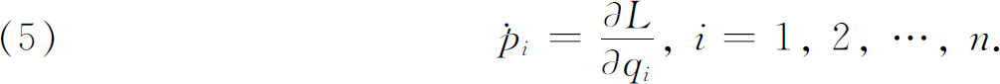
这些pi是动量的分量，而qi是位置的直角坐标。方程（5）是走上我们将要考察的方向上的一步。
最小作用原理，在叙述上的巨大改变是由哈密顿（William R．Hamilton）做出的，这一改变对变分法、常微分方程和偏微分方程都是重要的。哈密顿是经光学到动力学的。他在光学上的目的是要用拉格朗日处理力学那样的方式形成一种演绎的数学结构。
哈密顿也是从最小作用原理出发，并要推演出一些新的原理。然而他对这种原理的态度与莫佩尔蒂、欧拉、拉格朗日是有深刻区别的。在《都柏林大学评论》（Dublin University Review）上发表的一篇论文(4)中他说：“但是虽然最小作用原理已如此立足于物理学最高级定理之林，然而在宇宙经济的基地上看，当时人们普遍拒绝把它作为宇宙规律的主张，对此，拒绝恰恰在于其他理由，事实上伪装节约的数量都常常浪费地消耗着。”因为在某些自然现象，甚至于最简单的现象里，作用是极大化了的，所以哈密顿宁愿把它说成稳定作用原理。
哈密顿在1824年到1832年间的一系列论文里建立了他的光学的数学理论，尔后把他在那里引入的概念移植到力学中去。他写了两篇基本论文(5)。其中第二篇更为著名。在那里他引进作用积分，即动能与位能的差对时间的积分
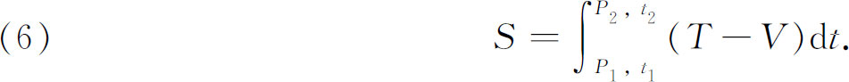
虽然量T-V是由泊松引进的，但却叫做拉格朗日函数。P1代表
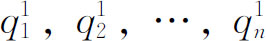
，而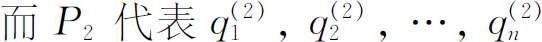
。现在哈密顿推广欧拉与拉格朗日的原理，允许有不受限制的比较路径，只是沿这些路径的运动必须在时间t1从P1开始，在时间t2到达P2。同时能量守恒定律不必成立，而在欧拉-拉格朗日原理中，能量守恒定律是预先假定的，因而一物体历经比较途径中任一条所需的时间不同于历经真实途径所费的时间。哈密顿最小作用原理断言，真实运动是使作用稳定的运动。对于保守系统，即在力的分量可从仅是位置的函数的位能导出的场合，T＋V＝常数，所以T-V＝2T-常数，从而哈密顿原理化归到拉格朗日原理。但如已经指出的，哈密顿原理对非保守系统也是成立的。还有，位能V可以是时间的函数，甚至还是速度的函数，即在广义坐标中，
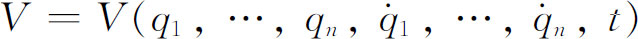
。如果令T-V＝L，我们把作用积分（6）写为
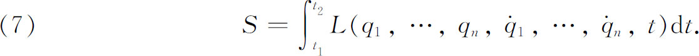
附以条件：所有比较函数
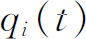
在t1和t2都必须有同一给定值，于是问题就是要在真实的qi使积分稳定的条件下来确定qi为t的函数。表示S的一级变分为0的条件的欧拉方程变成齐次二阶常微分方程组，即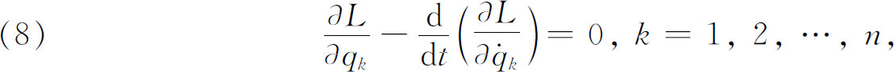
而这些方程要在t1≤t≤t2内是可解的。虽然L现在是一个不同的函数，但这些方程仍叫做拉格朗日运动方程。坐标系的选择是任意的，通常是用拉格朗日广义坐标，这是变分原理的基本优点。
现在引进［看（4）］
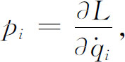
于是方程（8）变成
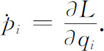
虽然引进pi作为一组新的自变量是泊松首先做的，但是仍归功于哈密顿。现在我们有了一组对称的微分方程
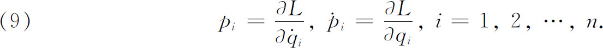
这是2n个关于
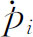
的一阶微分方程组。然而这些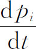
。哈密顿在他的第二篇（1835）论文中，简化了这个方程组。他引进一个新的函数H，定义为
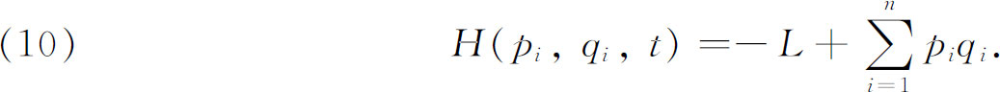
这个函数在物理上就是总能量，因为这个和可以证明是等于2T。从L到H的变换叫做勒让德变换，因为勒让德曾把它用在他的常微分方程研究中。H是
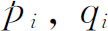
，t的函数，而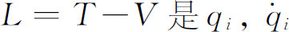
，t的函数，这是因为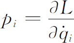
，所以我们可以解出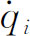
，并代到L中去。利用（10），可以证明运动的微分方程（9）具有形式
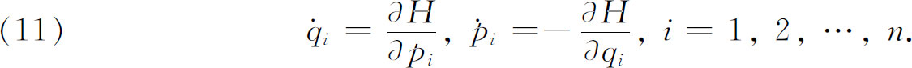
在应用于物理问题中时，函数H假定是已知的。这些方程是2n个一阶常微分方程的方程组，有2n个应变量pi和qi，它们都是t的函数，而拉格朗日方程（1）是qi（t）的n个二阶常微分方程的方程组。后来雅可比把哈密顿方程称为典型微分方程。它们是积分
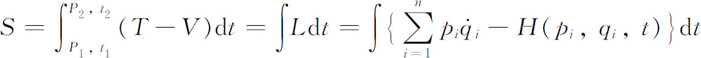
的变分方程（欧拉方程）。这组方程出现在拉格朗日1809年的一篇研究力学系统机动理论的论文中。然而，拉格朗日没有看出这些方程与运动方程的基本联系，而柯西在1831年的一篇未发表的论文中则看出来了。哈密顿在1835年把这些方程作为他的力学研究的基础。
为了运用哈密顿的运动方程，常常可能采用合适的p和q坐标系来表示H，使得可以从方程组（11）解出pi与qi作为t的函数。特别地，如果能选取坐标使得H只依赖于pi，那么这方程组就是可解的。
雅可比在1837年的一篇论文(6)中以及在1842年和1843年关于动力学的讲演里［这讲演1866年刊于经典著作《动力学讲义》（Vorlesungen über Dynamik）中］都指出，人们可以把哈密顿的程序反转过来。在哈密顿的理论中，如果知道作用S或哈密顿函数H，就可以作出2n个典型微分方程并可试图解出这方程组。雅可比的思想是图谋找出坐标Pi和Qi以使H尽可能简单，因而微分方程（11）能易于积分。特别地，他找到一个变换
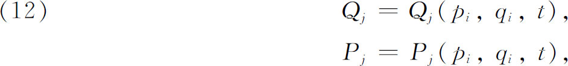
使得
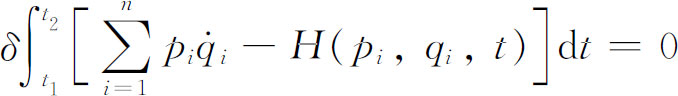
经变换（12）变到
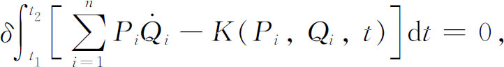
从而哈密顿微分方程变成
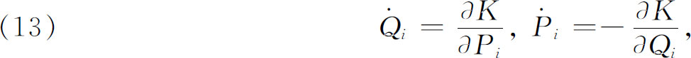
其中
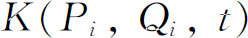
是新的哈密顿算子。这一途径导致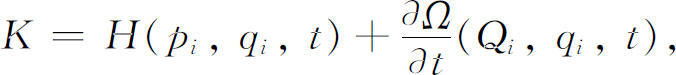
其中Ω是新的函数，叫做变换的母函数。雅可比选取K＝0，从而由（13）得到
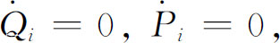
也就是说Qi，Pi是常数。此外，有
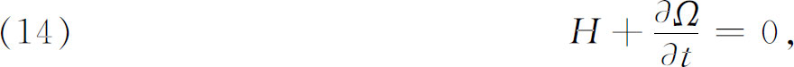
并可证明
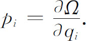
考虑到H中的变量，就可由（14）得到
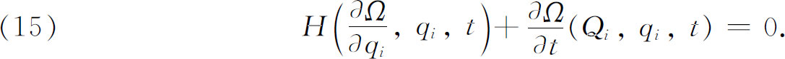
因为
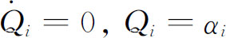
，所以这方程是关于Ω（具自变量qi和t）的一阶方程。作这样的改变后，方程（15）便是关于Ω的哈密顿-雅可比偏微分方程。如果这个方程可以解出一个完全的Ω，即包含n个任意常数的解，那么这解将有形式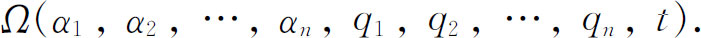
现在从雅可比变换理论有这样一个事实：
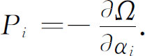
并且因为
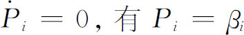
是常数，所以从代数方程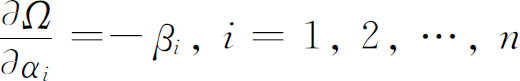
解出qi，这些解
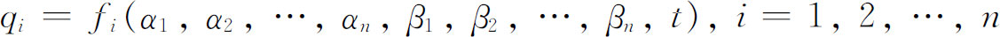
是哈密顿典型方程的解。这样，雅可比便证明了经过解偏微分方程（15）就可以解出方程组（11）。雅可比本人就对许多力学问题找出了真正解Ω。
哈密顿的工作是提供一个普遍原理（可以从它导出各种力学问题的运动定律）的一系列努力的顶峰，它鼓舞人们努力在其他数学物理分支，如弹性学、电磁理论、相对论、量子理论中求得相似的变分原理。已经导出的原理，即使是哈密顿原理，都不必是解特殊问题的更实际途径。虽然科学家们不再推断说极大极小原理的存在是上帝的智慧和效能的证据了，但是这种广泛的公式的吸引力，毋宁说是在于哲学和美学的兴趣。
从数学史的角度看，哈密顿和雅可比的工作是有意义的，因为它不仅推动了变分法的进一步研究，而且也推动了常微分方程组和一阶偏微分方程组的进一步研究。